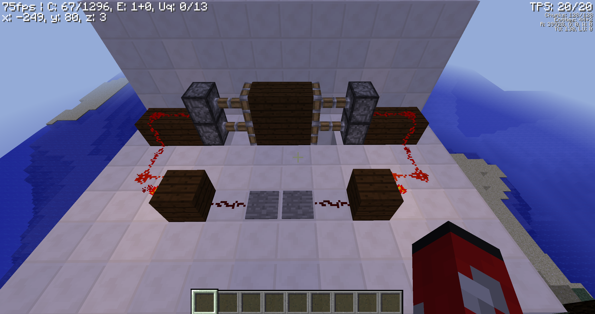
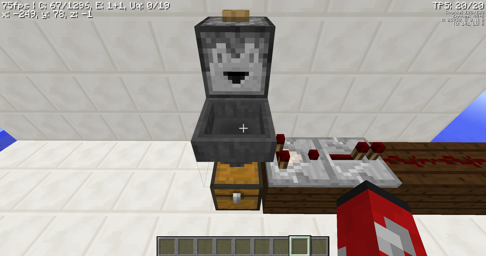
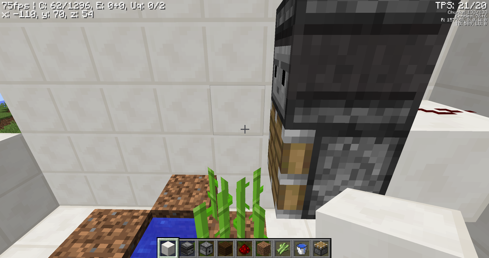

When you step on the presure plates, the redstone torches turn off. Then the pistons deactivate because if you put redstone inbetween pistons, they both active or deactivate, leting you go through. When you go off the presure plates, the pistons reactivate.

When the item goes in the hopper, the comparator detects an item is in the hopper and turns on the redstone. The repeater makes it a full signal. Then the item goes in the chest.

When the sugarcane grows two blocks, then the observer detects it. The redstone activates and the piston extends. Then the sugarcane breaks.

l
\/
go to the home page The fundementals What redstone does Miscellaneous go back to the top, ,